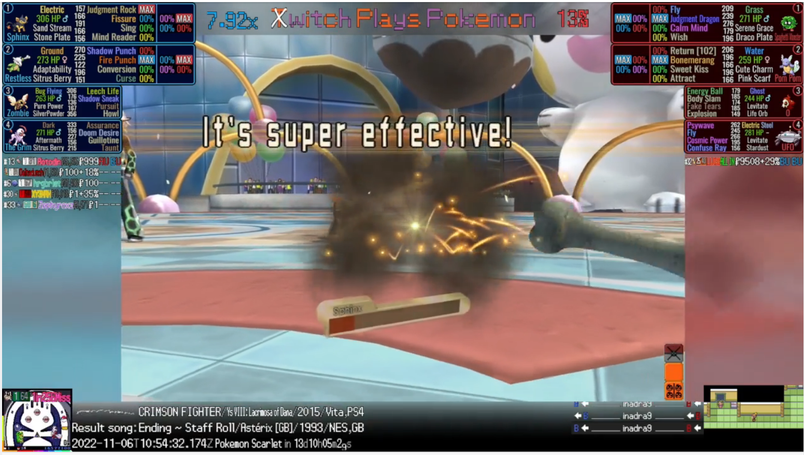

Jonathan Levy
Computer Science University of Florida
Hi! My name is Jonathan and I am a Junior Computer Science major at the University of Florida. At heart, I am a math enthusiast and I love to solve problems.
Add another paragraph if needed.
Featured Projects
View selected projects below.
Twitch Plays Pokemon Data Analyzer
Summary or description of the project and/or your role in it. Add as many paragraphs as you need.
View project / case studyWork Experience
Peer Tutor
Knack
Sept 2021 - Feb 2022
Peer tutor for students at the University of Florida. Assisted students with Physics, Calculus, and Programming Fundamentals. Tutored over 200 hours with a 4.9 star peer rating.
My tutor profile can be found here .
Education
University of Florida
Computer Science
Expected Graduation: May 2024
Summary or accomplishments.